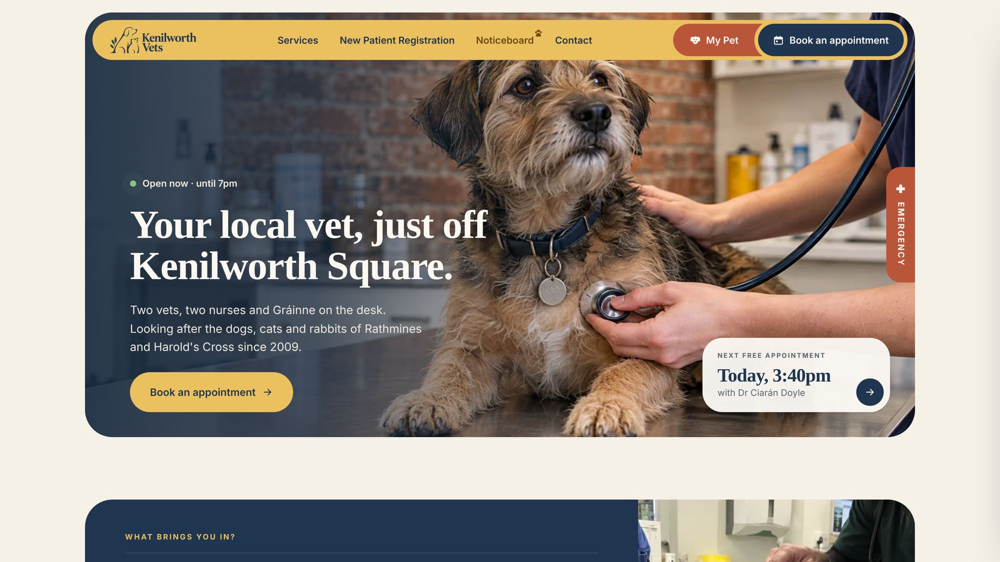

FennelDental
A dental clinic that answers a nervous patient’s questions before they sit in the chair: what will happen, how long it takes and what it costs.
- Sector
- Dental clinic, Dublin
- Role
- Design and build
- Built with
- Astro, TypeScript, Claude Code
Before the chair
Many people put off the dentist because they don’t know what will happen in the chair. I showed each treatment on a single tooth, with its length, visits, how it feels and the fee, so a nervous patient books already knowing what to expect.

Someone with toothache wants to know one thing: can I be seen today? I put today’s free appointments and the earliest time right under the headline, so the answer is the first thing they read.
Patients arrive with a problem, not a treatment name. I opened the booking with “What brings you in?”: two answers lead to one consultation with its length and fee, so nobody has to guess what to book.
Choosing a person
People choose a dentist, not a clinic. I listed the team with each dentist’s next free slot on the same line, so choosing a person and booking an appointment become one decision.
For a nervous patient, how a dentist works matters more than the list of treatments. I gave every dentist a page that says exactly that, with her next free slots beside it.
Every extra step in a booking form loses a patient to the clinic down the road. I cut it to treatment, dentist, day and time, with no account and no text code.
Type and colour
On the phone


Every screen on this page is a recording of the live site.
Visit the live site